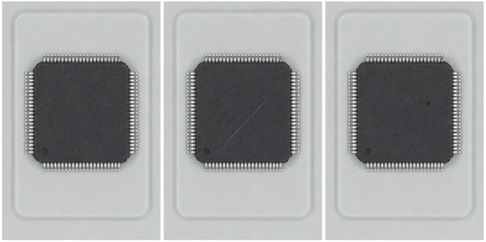
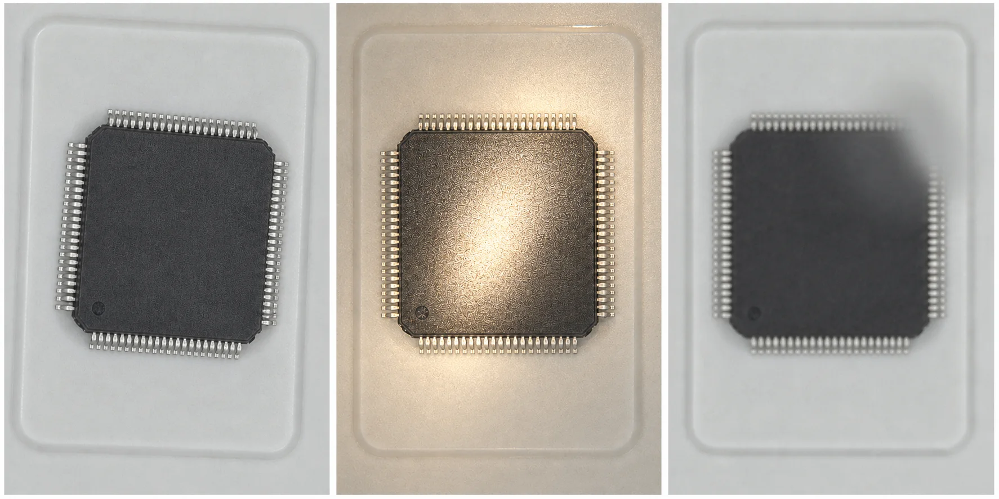
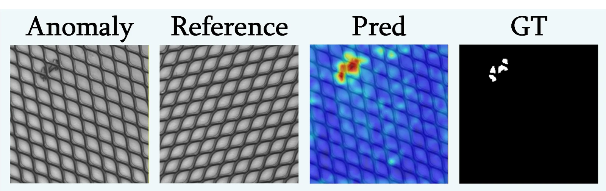
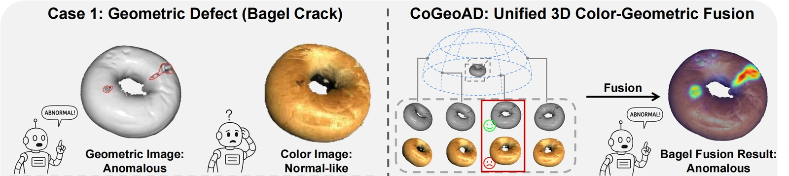
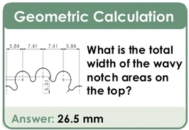
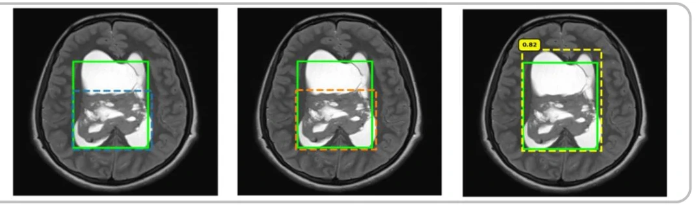
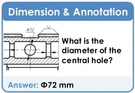
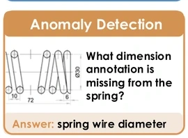
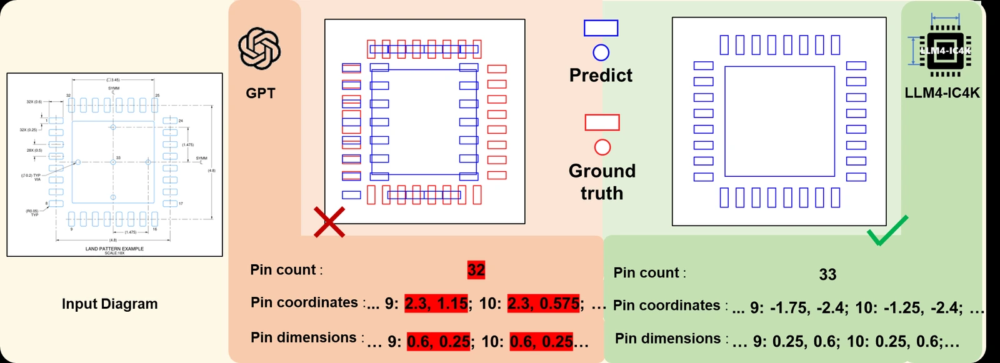

BENCHMARK조건을 고정한 비교 시험
조건 고정
촬영 조건카메라 · 조명 · 위치가 모두 고정
이 시험의 질문같은 조건에서 누가 더 좋은가?
ICML 2026 · SEOUL
답하기 전에,
어떤 시험을 봤는지부터 봐야 합니다.
TODAY'S THESIS
현실의 품질 문제는 시험지 밖에서 시작됩니다.
01 · THE GAP
Benchmark는 닫힌 세계.
현장은 계속 변하는 세계.

촬영 조건카메라 · 조명 · 위치가 모두 고정
이 시험의 질문같은 조건에서 누가 더 좋은가?

실제 부품정상인데 영상은 크게 달라짐
현장의 질문정상을 불량으로 오판하지 않을까?
REALITY TAX
평균 점수 하나로는 이 비용을 볼 수 없습니다.
WHAT RESEARCHERS CARE ABOUT

새 불량 표본 없이 검사 task를 시작합니다.

한 센서의 사각을 다른 센서가 보완합니다.
잘못 섞인 학습 샘플의 영향을 줄입니다.

전문 데이터와 채점으로 좁고 깊게 풉니다.
애매한 판단을 사람에게 넘길 기준을 만듭니다.
품질 조직에 설명하기 좋은 ICML 2026 응용 논문을 중심으로 선별한 흐름이며, 학회 전체 분야의 정량 분류는 아닙니다.
CASE 01 · INDUSTRIAL INSPECTION
RAD는 새 검사 task에 별도 학습 없이, 정상 golden sample과 범용 시각 지식을 비교합니다.
CASE 01 · PAPER DETAIL
CASE 02 · MULTIMODAL INSPECTION
얼룩은 RGB로, 균열·찌그러짐은 3D 형상으로 더 잘 찾습니다.
CASE 02 · PAPER DETAIL
CASE 03 · DIRTY TRAINING DATA
현실에서는 미검 불량이 정상 memory 안으로 들어옵니다.
CASE 03 · PAPER DETAIL
CASE 04 · RARE ABNORMALITY
MRI를 조금씩 변형해 반복 관찰하고, 계속 같은 곳을 가리키는지 확인합니다.
CASE 04 · PAPER DETAIL

CASE 05 · DOMAIN SPECIALIST
도면 규칙을 배운 4B 전문 모델이 범용 모델보다 기계도면 점수가 높았습니다.
CASE 05 · PAPER DETAIL


CASE 06 · HUMAN × AI
IC footprint 이미지에서 pin 수·좌표·크기를 표로 정리합니다.
CASE 06 · PAPER DETAIL

CASE 07 · CALIBRATION
405개의 실제 자연과학 실험 결과를 예측하고, 자신의 답을 믿을 수 있는지도 물었습니다.
CASE 07 · PAPER DETAIL
THE METRIC TRAP
희귀 불량에서는 작은 false positive tail도 수많은 오검으로 바뀝니다.
FROM MODEL SCORE TO PRODUCT QUALITY
모델을 만드는 것과, 모델을 믿어도 되는 조건을 만드는 것은 다른 일입니다.
제품 · 설비 · Lot · 주야간
각도 · 반사 · 초점 · AI 생성 예시
오검 · 미검 · 유출 비용
거부 · 보류 · 이관 기준
분포 · 오검률 · 장비 변화
TAKEAWAY
좋은 시작점은 효과를 설명할 수 있고,결과를 확인하고 실패를 통제할 수 있는 일입니다.